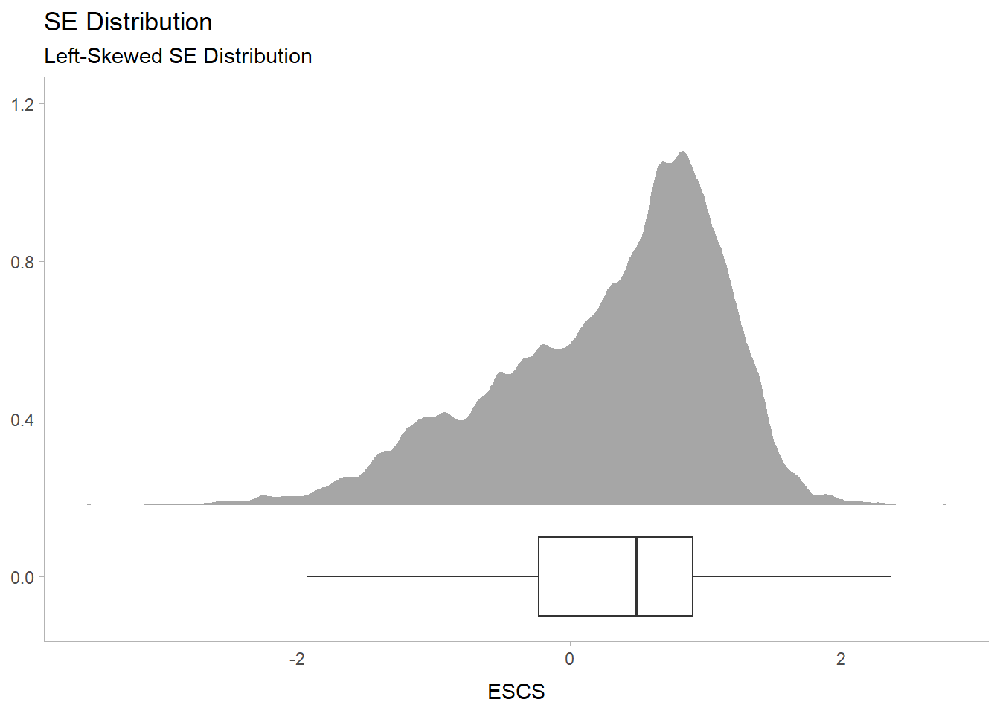

Code
pacman::p_load(tidyverse, haven, dplyr, plyr, ggrepel, ggthemes, knitr, kableExtra, intsvy, hrbrthemes, ggridges, ggdist, patchwork, colorspace, reshape2, scales, ggplot2, ggpol, gridExtra)OECD education director Andreas Schleicher shared in a BBC article that “Singapore managed to achieve excellence without wide differences between children from wealthy and disadvantaged families.” (2016) Furthermore, several Singapore’s Minister for Education also started an “every school a good school” slogan. The general public, however, strongly believes that there are still disparities that exist, especially between the elite schools and neighborhood school, between students from families with higher socioeconomic status and those with relatively lower socioeconomic status and immigration and non-immigration families.

The 2022 Programme for International Student Assessment (PISA) data was released on December 5, 2022. PISA global education survey every three years to assess the education systems worldwide through testing 15 year old students in the subjects of mathematics, reading, and science.
In this take-home exercise, we are required to use appropriate Exploratory Data Analysis (EDA) methods and ggplot2 functions to reveal:
the distribution of Singapore students’ performance in mathematics, reading, and science, and
the relationship between these performances with schools, gender and socioeconomic status (SES) of the students.
The PISA 2022 database contains the full set of responses from individual students, school principals and parents. A total of five data sets were extracted and their contents are as follows:
Student questionnaire data file
School questionnaire data file
Teacher questionnaire data file
Cognitive item data file
Questionnaire timing data file
In this exercise, we are to utilize the student questionnaire data set only.
Installation of mulitple R packages via the use of pacman::p_load() function from the pacman package. See the code chunk below:
pacman::p_load(tidyverse, haven, dplyr, plyr, ggrepel, ggthemes, knitr, kableExtra, intsvy, hrbrthemes, ggridges, ggdist, patchwork, colorspace, reshape2, scales, ggplot2, ggpol, gridExtra)The students questionaire data file was uploaded as stu_qqq_SG. See the code chunk below:
stu_qqq <- read_sas("data/cy08msp_stu_qqq.sas7bdat")
stu_qqq_SG <- stu_qqq %>% filter(CNT =="SGP")
write_rds(stu_qqq_SG,"data/stu_qqq_SG.rds")
stu_qqq_SG <- read_rds("data/stu_qqq_SG.rds")
head(stu_qqq_SG, 5)# A tibble: 5 × 1,279
CNT CNTRYID CNTSCHID CNTSTUID CYC NatCen STRATUM SUBNATIO REGION OECD
<chr> <dbl> <dbl> <dbl> <chr> <chr> <chr> <chr> <dbl> <dbl>
1 SGP 702 70200052 70200001 08MS 070200 SGP01 7020000 70200 0
2 SGP 702 70200134 70200002 08MS 070200 SGP01 7020000 70200 0
3 SGP 702 70200112 70200003 08MS 070200 SGP01 7020000 70200 0
4 SGP 702 70200004 70200004 08MS 070200 SGP01 7020000 70200 0
5 SGP 702 70200152 70200005 08MS 070200 SGP01 7020000 70200 0
# ℹ 1,269 more variables: ADMINMODE <dbl>, LANGTEST_QQQ <dbl>,
# LANGTEST_COG <dbl>, LANGTEST_PAQ <dbl>, Option_CT <dbl>, Option_FL <dbl>,
# Option_ICTQ <dbl>, Option_WBQ <dbl>, Option_PQ <dbl>, Option_TQ <dbl>,
# Option_UH <dbl>, BOOKID <dbl>, ST001D01T <dbl>, ST003D02T <dbl>,
# ST003D03T <dbl>, ST004D01T <dbl>, ST250Q01JA <dbl>, ST250Q02JA <dbl>,
# ST250Q03JA <dbl>, ST250Q04JA <dbl>, ST250Q05JA <dbl>, ST250D06JA <chr>,
# ST250D07JA <chr>, ST251Q01JA <dbl>, ST251Q02JA <dbl>, ST251Q03JA <dbl>, …Focusing on the Exercise Objectives, the Data of Interests will be scoped towards selected variables. These variables are:
stu_qqq_SG_selectedV <- stu_qqq_SG %>% select(CNTSTUID, STRATUM, ST004D01T, IMMIG, ESCS,PV1READ:PV10READ, PV1SCIE:PV10SCIE, PV1MATH:PV10MATH)The variables are all anchored based on each Student’s UNIQUE ID - CNTSTUID
Next, we will check for duplicates, missing values and convert data types as part of data pre-processing.
Data Health Handling duplicates
stu_qqq_SG_selectedV[duplicated(stu_qqq_SG_selectedV),]# A tibble: 0 × 35
# ℹ 35 variables: CNTSTUID <dbl>, STRATUM <chr>, ST004D01T <dbl>, IMMIG <dbl>,
# ESCS <dbl>, PV1READ <dbl>, PV2READ <dbl>, PV3READ <dbl>, PV4READ <dbl>,
# PV5READ <dbl>, PV6READ <dbl>, PV7READ <dbl>, PV8READ <dbl>, PV9READ <dbl>,
# PV10READ <dbl>, PV1SCIE <dbl>, PV2SCIE <dbl>, PV3SCIE <dbl>, PV4SCIE <dbl>,
# PV5SCIE <dbl>, PV6SCIE <dbl>, PV7SCIE <dbl>, PV8SCIE <dbl>, PV9SCIE <dbl>,
# PV10SCIE <dbl>, PV1MATH <dbl>, PV2MATH <dbl>, PV3MATH <dbl>, PV4MATH <dbl>,
# PV5MATH <dbl>, PV6MATH <dbl>, PV7MATH <dbl>, PV8MATH <dbl>, …Checking missing values
sum(is.na(stu_qqq_SG_selectedV))[1] 283There are a total of 283 missing values which is merely 4.2% of the overall data set hence can regarded as statistically negligible.
Converting Data Types: Converting CNTSTUID & GENDER from num type to chrtype as they are categorical in nature. Subsequently, renaming and recoding them to enhance data comprehension.
stu_qqq_SG_selectedV<- stu_qqq_SG_selectedV %>% mutate(CNTSTUID = as.character(CNTSTUID))
names(stu_qqq_SG_selectedV)[names(stu_qqq_SG_selectedV) == 'CNTSTUID'] <- 'STUDENT ID'
names(stu_qqq_SG_selectedV)[names(stu_qqq_SG_selectedV) == 'ST004D01T'] <- 'GENDER'
stu_qqq_SG_selectedV <- stu_qqq_SG_selectedV %>%
mutate(GENDER = recode(as.character(GENDER), '1' = 'FEMALE', '2' = 'MALE'))
stu_qqq_SG_selectedV <- stu_qqq_SG_selectedV %>%
mutate(STRATUM = recode(STRATUM, 'SGP01' = 'MAINSTREAM SCH', 'SGP03' = 'PRIVATE SCH'))
stu_qqq_SG_selectedV<- stu_qqq_SG_selectedV %>%
mutate(IMMIG = recode(IMMIG, '1' = 'NATIVE', '2' = '2ND GEN', '3' = '1ST GEN'))Utilising the prob density and histogram, we develop the visualisation to observe the distributions and the summary stats across all subject of interests.
stu_qqq_SG_selectedV <- stu_qqq_SG_selectedV %>%
mutate(Maths = rowSums(stu_qqq_SG_selectedV[paste0('PV', c(1:10), "MATH")],
na.rm = TRUE)/100) %>%
mutate(Reading =
rowSums(stu_qqq_SG[paste0('PV', c(1:10), "READ")],
na.rm = TRUE)/100) %>%
mutate(Science =
rowSums(stu_qqq_SG[paste0('PV', c(1:10), "SCIE")],
na.rm = TRUE)/100)
temp_Data <- stu_qqq_SG_selectedV[, c("Science", "Reading", "Maths")]
temp_Data <- melt(temp_Data, variable.name = "Subject")No id variables; using all as measure variablesggplot(temp_Data, aes(x = value, y = Subject)) +
stat_halfeye(aes(fill = Subject),
adjust = 0.5,
justification = 0.1,
.width = 0,
point_colour = NA) +
geom_boxplot(width = 0.2) +
stat_summary(fun = mean, geom = "point", shape = 16,
size = 3, color = "darkred",
position = position_nudge(x = 0.0)) +
stat_summary(fun = mean, colour="darkred",
geom = "text", show.legend = FALSE,
vjust = -1.5, aes( label=round(after_stat(x), 1))) +
labs(y = NULL, x = "Scores",
title = "Distribution of Scores",
subtitle = "Math subject, yielded greater performance by students compared to Reading and Science") +
theme_tidybayes()+
theme(legend.position = "none")# Calculate mean and median
mean_value <- mean(stu_qqq_SG_selectedV$Maths, na.rm = TRUE)
median_value <- median(stu_qqq_SG_selectedV$Maths, na.rm = TRUE)
# Create the histogram
histogram_plot <- ggplot(data = stu_qqq_SG_selectedV, aes(x = Maths)) +
geom_histogram(binwidth = 2, fill = "lightblue", color = "black") + # Adjust binwidth and color here
geom_vline(xintercept = mean_value, color = "red", linetype = "dashed", linewidth = 0.5) +
geom_vline(xintercept = median_value, color = "blue", linetype = "dotted", linewidth = 0.5) +
labs(title = "Histogram of Maths Scores",
x = "Maths Scores",
y = "Frequency",
subtitle = paste("Mean (red):", round(mean_value, 2),
"- Median (blue):", round(median_value, 2)))
# Print the plot
print(histogram_plot) # Calculate mean and median
mean_value <- mean(stu_qqq_SG_selectedV$Reading, na.rm = TRUE)
median_value <- median(stu_qqq_SG_selectedV$Reading, na.rm = TRUE)
# Create the histogram
histogram_plot <- ggplot(data = stu_qqq_SG_selectedV, aes(x = Reading)) +
geom_histogram(binwidth = 2, fill = "lightgreen", color = "black") + # Adjust binwidth and color here
geom_vline(xintercept = mean_value, color = "red", linetype = "dashed", linewidth = 0.5) +
geom_vline(xintercept = median_value, color = "blue", linetype = "dotted", linewidth = 0.5) +
labs(title = "Histogram of Reading Scores",
x = "Reading Scores",
y = "Frequency",
subtitle = paste("Mean (red):", round(mean_value, 2),
"- Median (blue):", round(median_value, 2)))
# Print the plot
print(histogram_plot) # Calculate mean and median
mean_value <- mean(stu_qqq_SG_selectedV$Science, na.rm = TRUE)
median_value <- median(stu_qqq_SG_selectedV$Science, na.rm = TRUE)
# Create the histogram
histogram_plot <- ggplot(data = stu_qqq_SG_selectedV, aes(x = Science)) +
geom_histogram(binwidth = 2, fill = "lightpink", color = "black") + # Adjust binwidth and color here
geom_vline(xintercept = mean_value, color = "red", linetype = "dashed", linewidth = 0.5) +
geom_vline(xintercept = median_value, color = "blue", linetype = "dotted", linewidth = 0.5) +
labs(title = "Histogram of Science Scores",
x = "Science Scores",
y = "Frequency",
subtitle = paste("Mean (red):", round(mean_value, 2),
"- Median (blue):", round(median_value, 2)))
# Print the plot
print(histogram_plot) The aim of these visualisations was to show the performance distribution of students across all individual subjects.
Trends in each plot showed :
distribution characteristic is of a Normal Distribution,
distribution mildly skews to the left.
From here we can deduce that just about more than half of the cohort scores above the 50% mark.
Students fair better in Math, as a subject, compared to Reading and Science. :::
Utilising the boxplots, we visualise the how gender fair across all subjects.
library(ggplot2)
# Calculate mean and median for each gender
means <- aggregate(Maths ~ GENDER, data = stu_qqq_SG_selectedV, FUN = mean)
# Create the boxplot
ggplot(data = stu_qqq_SG_selectedV, aes(y = Maths, x = GENDER, color = GENDER)) +
geom_boxplot(width = 0.3) +
# Add mean lines
geom_errorbar(data = means, aes(ymin = Maths, ymax = Maths, x = GENDER),
width = 0.2, color = "darkred") +
geom_text(data = means, aes(label = round(Maths, 1), y = Maths, x = GENDER),
vjust = -1.5, color = "darkred", size = 3) +
# Titles and subtitles
labs(title = "Maths Scores by Gender",
subtitle = "Male scores better in Maths in comparison with Female",
x = "Gender",
y = "Maths Scores",
color = "Gender")library(ggplot2)
# Calculate mean and median for each gender
means <- aggregate(Reading ~ GENDER, data = stu_qqq_SG_selectedV, FUN = mean)
# Create the boxplot
ggplot(data = stu_qqq_SG_selectedV, aes(y = Reading, x = GENDER, color = GENDER)) +
geom_boxplot(width = 0.3) +
# Add mean lines
geom_errorbar(data = means, aes(ymin = Reading, ymax = Reading, x = GENDER),
width = 0.2, color = "darkred") +
geom_text(data = means, aes(label = round(Reading, 1), y = Reading, x = GENDER),
vjust = -1.5, color = "darkred", size = 3) +
# Titles and subtitles
labs(title = "Reading Scores by Gender",
subtitle = "Female scores better in Reading",
x = "Gender",
y = "Reading Scores",
color = "Gender")library(ggplot2)
# Calculate mean and median for each gender
means <- aggregate(Science ~ GENDER, data = stu_qqq_SG_selectedV, FUN = mean)
# Create the boxplot
ggplot(data = stu_qqq_SG_selectedV, aes(y = Science, x = GENDER, color = GENDER)) +
geom_boxplot(width = 0.3) +
# Add mean lines
geom_errorbar(data = means, aes(ymin = Science, ymax = Science, x = GENDER),
width = 0.2, color = "darkred") +
geom_text(data = means, aes(label = round(Science, 1), y = Science, x = GENDER),
vjust = -1.5, color = "darkred", size = 3) +
# Titles and subtitles
labs(title = "Science Scores by Gender",
subtitle = "Male scores better in Science as compared to their Female counterparts",
x = "Gender",
y = "Science Scores",
color = "Gender")The aim of these visualisations was to show Gender performance across all individual subjects.
Males Mean scores are higher hence we can deduce that Males fair better in Math and Science subjects.
Female fair better in Reading as compared to their Male counterparts.
SE Distribution Let’s first take a look into the socioeconomic (SE) distribution to gain some insights.
stu_qqq_SG_selectedV <- na.omit(stu_qqq_SG_selectedV)
ggplot(data = stu_qqq_SG_selectedV, aes(x = ESCS)) +
stat_halfeye(adjust = 0.5,
justification = -0.2,
.width = 0, point_colour = NA) +
geom_boxplot(width = 0.20,
outlier.shape = NA) +
labs(y = NULL,
title = "SE Distribution", subtitle = "Left-Skewed SE Distribution") +
theme_tidybayes()
ESCS Index by Subject Performance
cor1 <- round(cor(stu_qqq_SG_selectedV$Maths, stu_qqq_SG_selectedV$ESCS),2)
cor2 <- round(cor(stu_qqq_SG_selectedV$Science, stu_qqq_SG_selectedV$ESCS),2)
cor3 <- round(cor(stu_qqq_SG_selectedV$Reading, stu_qqq_SG_selectedV$ESCS),2)
se1 <- ggplot(data = stu_qqq_SG_selectedV,
aes(y = Maths, x = ESCS)) +
geom_point(size = 0.1)+
geom_smooth(method = lm) +
annotate("text", x = 2.5, y = 100, label=paste0("r = ", cor1), color = 'lightblue') +
theme_tidybayes()
se2 <- ggplot(data = stu_qqq_SG_selectedV,
aes(y = Science, x = ESCS)) +
geom_point(size = 0.1)+
geom_smooth(method = lm) +
annotate("text", x = 2.5, y = 100, label=paste0("r = ", cor2), color = 'lightgreen') +
theme_tidybayes()
se3 <- ggplot(data = stu_qqq_SG_selectedV,
aes(y = Reading, x = ESCS)) +
geom_point(size = 0.1)+
geom_smooth(method = lm) +
annotate("text", x = 2.5, y = 100, label=paste0("r = ", cor3), color = 'lightpink') +
theme_tidybayes()
se1/se2/se3`geom_smooth()` using formula = 'y ~ x'
`geom_smooth()` using formula = 'y ~ x'
`geom_smooth()` using formula = 'y ~ x'
Left Skewed Distribution from the SE Index can be deduced that students with normal to high ESCS Index are more prevalent as compared to the lower ESCS index. To bring the conversation further, we can study into the distribution of native, 1st Gen and 2nd Gen by the ESCS index in the future.
Depicts a positive moderate correlation between Scores and ESCS index, hence we can infer that students with higher ESCS Index scores better in their subjects.
Math is the Subject that scores higher as compared to Reading and Science.
Male tends to score in both Maths and Science, while Females are comparatively higher in terms of scoring in Reading.
There is a positive correlation between the Socioecomic Index (ESCS) and performance of students.
From the distribution (SE index), students with normal to high ESCS Index are more prevalent as compared to the lower ESCS index.
Students with higher ESCS Index tends to score better in their subjects.